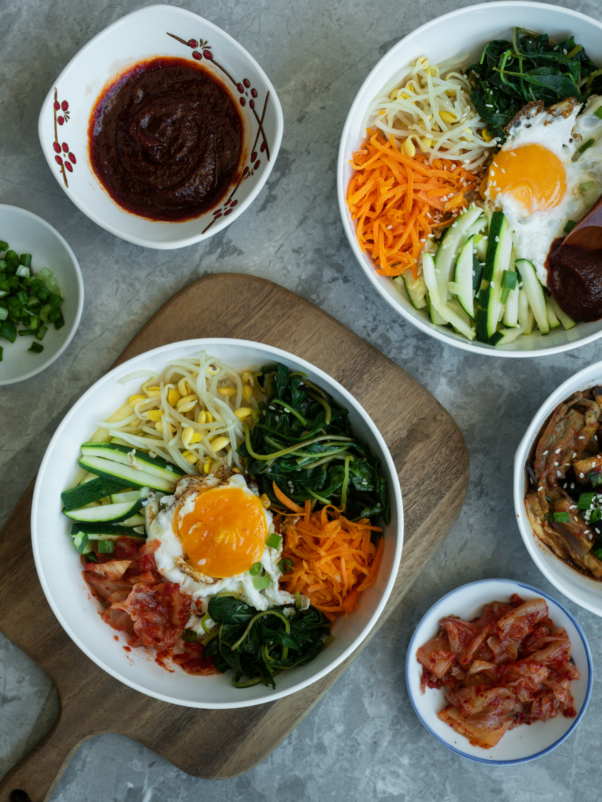

Bibimbap

Description
The recipe described below is a vibrant, balanced, and healthy Korean Bibimbap. While it looks gourmet, it is essentially a "clearing the fridge" dish that can be prepared in about 50 minutes (30 mins prep, 20 mins cook time). Using a simple pot for rice and a single frying pan, you can recreate this iconic Seoul staple in your own kitchen
Bibimbap (literally "mixed rice") is one of the most beloved Korean dishes. It traditionally consists of a bowl of warm white rice topped with namul (seasoned vegetables), gochujang (chili pepper paste), and often a fried egg and sliced meat. Historically, it was a dish prepared on the eve of the Lunar New Year to use up all leftover side dishes before the start of the new year. Today, it is celebrated globally for its perfect harmony of colors, textures, and nutritional balance.
The traditional process involves preparing each vegetable component separately to preserve its distinct flavor and color. These are then arranged artfully over a bed of fluffy short-grain rice. The soul of the dish lies in the Gochujang sauce, a sweet, spicy, and savory paste that binds all the ingredients together when you "mix" (bibim) it all up before eating.
Ingredients
- Short-grain white rice ( Korean or Shushi rice works the best)
- Beef (Minced or thinly sliced ribeye; tofu can be used as a substitute)
- Eggs - One per serving
- Gochujang ( Korean red chilli paste )
- Toasted Sesame Oil
- Garlic(minced)
- Soy sauce
- Sugar (or honey)
- Toasted Sesame Seeds
Complete Steps to make Bibimbap
Preparation-The components
- This recipe serves 2 people. Proper prep is key as the cooking happens fast.
- Rice: Rinse 2 cups of short-grain rice until water runs clear. Cook in a rice cooker or pot using a 1:1.1 water ratio.
- Meat Marination: Take 200g of beef and mix with 1 tbsp soy sauce, 1 tbsp sesame oil, 1 tsp sugar, and 1 tsp minced garlic. Set aside for 30 mins
- The Sauce: In a small bowl, mix 2 tbsp Gochujang, 1 tbsp sesame oil, 1 tbsp sugar, 1 tbsp water, 1 tbsp toasted sesame seeds, and 1 tsp vinegar. Set aside.
Cooking the Toppings
- Bibimbap toppings are prepared individually to preserve there distinct colors and flavors.
a) Vegetables
- Spinach & Bean Sprouts: Blanch in boiling water for 1-2 mins, rinse in cold water, squeeze dry, and season with a pinch of salt, sesame oil, and minced garlic.
- Carrots & Zucchini: Julienne (cut into matchsticks). Sauté separately in a lightly oiled pan with a pinch of salt for 2-3 mins until softened but still bright.
- Mushrooms: Sauté sliced shiitake with a splash of soy sauce until tender.
b) Beef
- In the same pan, turn heat to high and sauté the marinated beef until fully browned and slightly caramelized.
c) The Egg
- Fry the eggs sunny-side up. You want a runny yolk to create a creamy "sauce" when mixed.
Assembling the Bibimbap
- Now, bring the elements together:
- Base Layer: Place a generous serving of warm rice at the bottom of a large bowl.
- The Circle: Arrange each prepared vegetable and the meat in small "mounds" on top of the rice, moving in a circle. Contrast the colors (e.g., put carrots next to spinach) for the best look.
- The Centerpiece: Place the fried egg in the center.
- The Finish Drizzle 1 tsp of sesame oil over the bowl and sprinkle with sesame seeds. Add a large dollop of the Gochujang sauce on the side or in the center.
Serving
- If you are using a stone pot (Dolsot), coat the bottom with sesame oil, add the rice, and heat on the stove until the rice crackles. This creates a golden, crunchy crust (nurungji).
Pro Tip: Don't be afraid to break the yolk and mix everything vigorously! The goal is for every grain of rice to be coated in the spicy sauce and creamy yolk.
And there you have it. You have created a vibrant, healthy Bibimbap that rivals your favorite Korean restaurant. It’s a perfect, balanced meal you can customize with whatever veggies you have in the fridge!
Our other recipes:
Chicken Biryani
Pizza